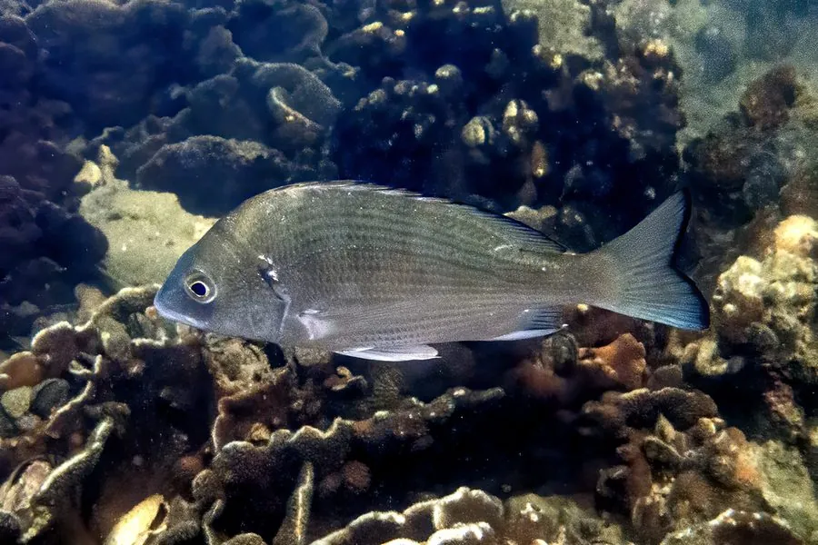

鱼类 · 动物界
黑鲷 Acanthopagrus schlegelii

体色灰黑、侧扁结实的近岸鲷科鱼类，适应盐度变化，是沿海养殖和垂钓的常见对象，俗称“黑加吉”。
- 分类
- 门脊索动物门纲辐鳍鱼纲目鲈形目科鲷科属棘鲷属
- 栖息环境
- 近岸岩礁、沙泥底质、河口和红树林，可进入咸淡水
- 地理分布
- 西北太平洋，包括中国沿海、台湾、日本和朝鲜半岛
- 保护级别
- IUCN 无危（LC）；中国未列入国家重点保护野生动物名录
物种志
黑鲷体呈椭圆形，侧扁，头较大，体色灰黑或黑褐色，腹部颜色较浅，体侧有时可见不明显的横纹。成鱼体长一般 20–40 cm，最大可达 50 cm，体重 1–3 kg。
黑鲷分布于西北太平洋，包括中国沿海、台湾、日本和朝鲜半岛。它栖息在近岸岩礁、沙泥底质、河口和红树林，对盐度变化的适应力较强，能进入咸淡水水域。黑鲷是杂食性鱼类，吃贝类、甲壳类、小鱼、藻类和有机碎屑。它是沿海常见的养殖和垂钓对象，肉质紧实，可清蒸、红烧。由于捕捞和养殖逃逸，其种群状况总体稳定，IUCN 评估为无危。它在河口生态系统中既是捕食者，也是大型鱼类的猎物。
形态与习性
- 食性杂食性，吃贝类、甲壳类、小鱼、藻类和有机碎屑
- 体长一般 20–40 cm，最大可达 50 cm
- 体重一般 1–3 kg
- 盐度适应能进入河口和咸淡水水域生活
- 繁殖春季到初夏在近岸浅水产卵
- 经济价值沿海常见养殖和垂钓对象，肉质紧实
趣味知识
- 黑鲷对盐度变化适应力强，能在河口甚至半咸水中生活。
- 它吃食很杂，连海藻和有机碎屑都会吞食。
- 黑鲷是沿海“黑加吉”，与真鲷的“红加吉”相对。